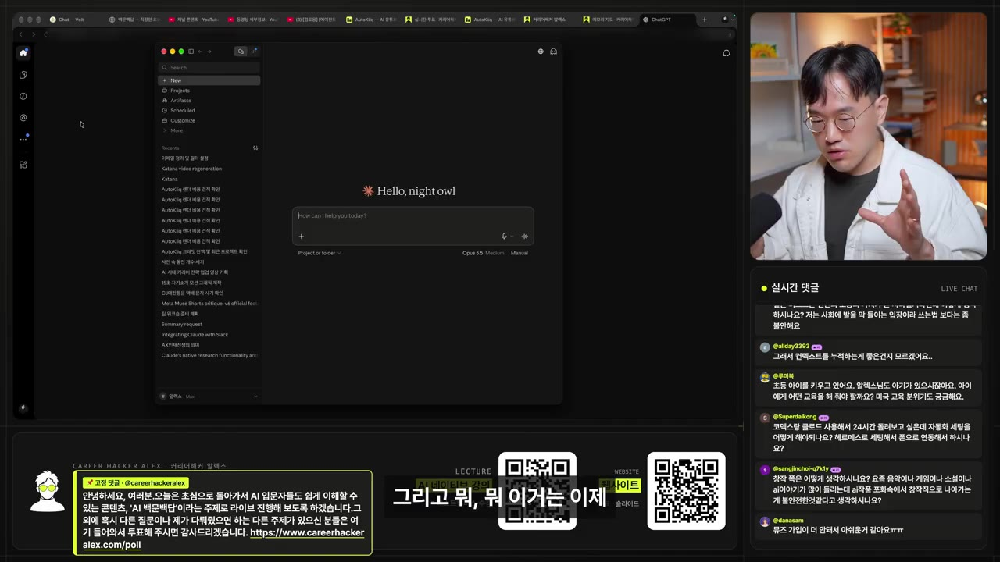
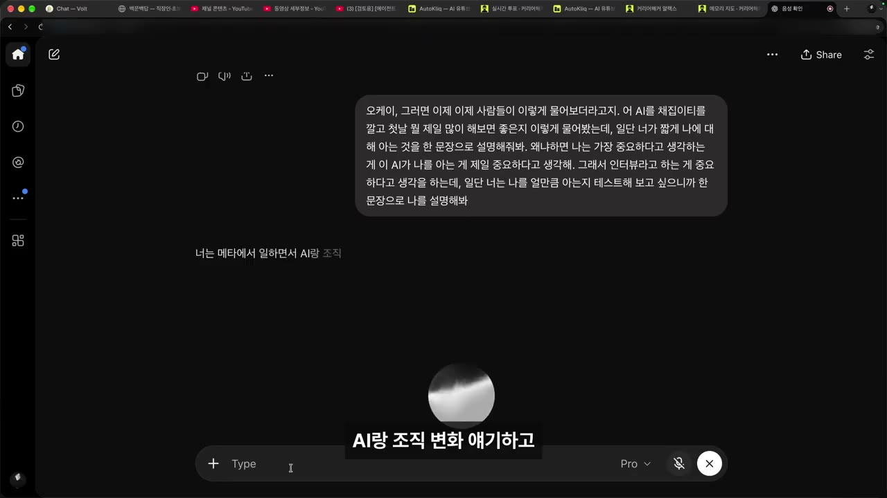
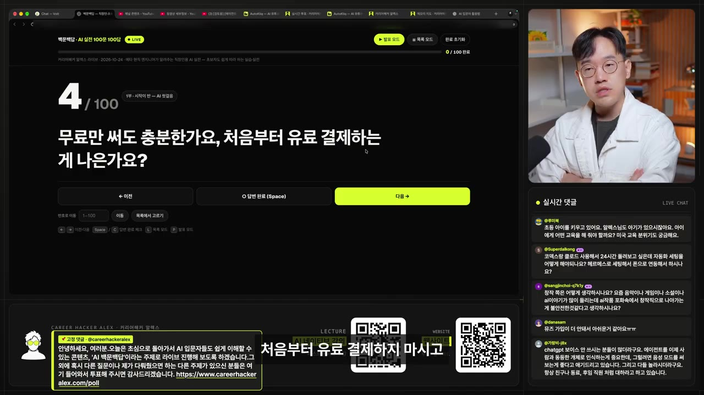
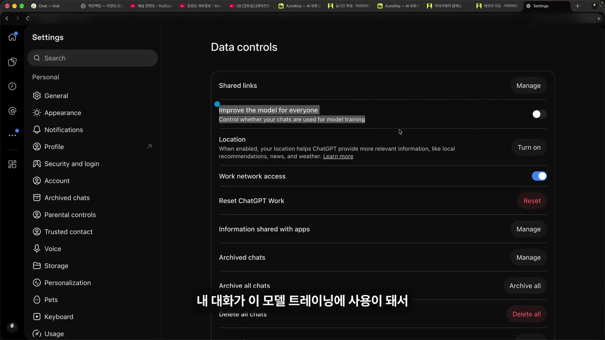
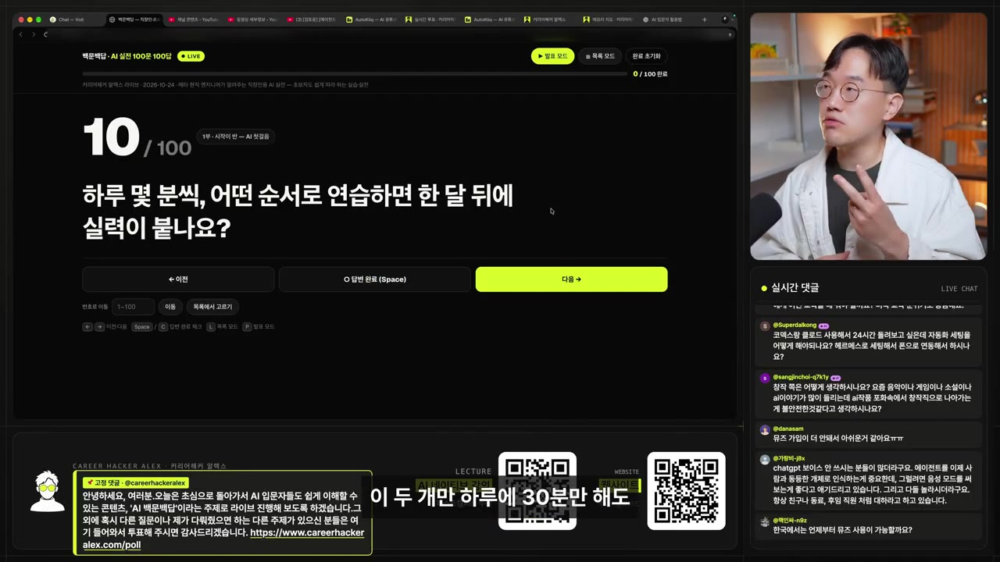

AI 처음이라면, 설치 없이 말로 시작하는 첫 30분
▶ 원본 영상 보기한눈에 보기
- 설치나 결제 없이, 말로 AI에게 말 거는 것부터 시작한다. 완전 처음이면 ChatGPT 앱의 보이스 모드, 조금 써 봤다면 Claude 데스크톱 앱으로 컴퓨터를 보고 나를 파악하게 한다.
- 첫날의 첫 질문은 "짧게 나에 대해 아는 것을 한 문단으로 설명해 봐"다. AI가 나를 얼마나 아는지 보는 테스트이면서, AI에게 나의 맥락을 쌓아 주는 첫걸음이다.
- 무료로 충분하고, 한도에 걸릴 때 유료로 넘어가면 된다. 늦게 시작해도 불리하지 않다는 것이 화자(메타 근무자)의 주장이다.
- 회사 일에 쓰기 전에 설정의 데이터 컨트롤에서 "내 대화를 모델 학습에 쓰는 옵션"을 끈다. 답이 의심스러우면 근거 자료를 달라고 하거나 다른 AI에게 검증시킨다.
- 연습은 하루 30분이다. 내가 AI에게 질문하고, AI가 나에게 질문하게 하는 두 가지를 반복하며 맥락을 쌓는다.
이런 분께 도움이 됩니다
- AI를 한 번도 안 써 봤거나 써 봤지만 뭘 더 해야 할지 모르는 직장인.
- 얻는 것: 오늘 바로 시작할 첫 행동, 첫 질문 3개, 회사 일에 쓰기 전 점검할 설정 하나, 2주 연습 방식.
핵심 내용
출발점은 지금 수준에 따라 다르다
- 화자의 출발 원칙은 "무조건 써 본다"이고, 모른다는 것도 AI에게 그대로 물어보는 게 최고라고 한다. (0:00)
- 수준별 추천은 아래와 같다.
| 지금 수준 | 추천 | 할 일 |
|---|---|---|
| AI도 기술도 전혀 모름 (시니어 포함) | ChatGPT 앱 + 보이스 모드 | 앱을 받아 음성으로 대화하며 다 물어본다 |
| ChatGPT는 해 봤고 더 해 보고 싶음 | Claude 데스크톱 앱 | 컴퓨터를 보고 나를 파악하게 한다 |
- Claude 데스크톱 앱에는 이렇게 시킨다: "이 컴퓨터에 내가 하는 프로젝트가 많다. 어떤 프로젝트를 하는지 전부 찾고 맥락을 파악해 봐." (1:58)
- 대화만 하는 단계에서 벗어나려면 AI에게 맥락을 줘야 한다. 컴퓨터에는 PPT, 개발 폴더 같은 내 맥락이 이미 있다.
- 화자는 첫 질문으로 "처음 쓰는 사람은 어떻게 시작하라고 추천해?"를 AI에게 물어보라고 한다. 답은 거창한 것 말고 자주 하는 작은 일(답장 초안, 일정 정리, 장보기 리스트)부터, 질문은 친구에게 말하듯 던지고 나온 답을 고쳐 달라고 주고받으라는 내용이었다.

💡 완전 처음이면 ChatGPT 음성 대화, 그다음 단계는 Claude로 컴퓨터 맥락 파악이다.
첫날: "나를 설명해 봐"
- 첫날의 첫 질문은 "네가 나에 대해 아는 것을 짧게 한 문단으로 설명해 봐"다. 왜 하는지는 화자가 이렇게 설명한다. (3:57)
- AI가 나를 아는 게 가장 중요하고, 이 질문은 AI가 나를 얼마나 아는지 테스트하는 용도다.
- 나를 모르는 AI는 거의 쓸모가 없고, 지금은 "맥락 싸움"이다. (5:07)
- AI가 나를 알면 달라지는 점은 아래와 같다.
- 질문을 덜 해도 바로 나에게 맞는 답이 나온다.
- 영상 속 예시에서는 "이번 주 유튜브 라이브 주제 세 개" 같은 바로 쓰이는 요청이 나온다.
- 완전 처음인 사람에게는 "내일 할 일 하나만 말해 봐" 같은 한 장면부터 시작한다.
- 초보가 해 볼 만한 질문 세 가지: (5:31)
- 너는 뭘 할 수 있니?
- 나에 대해서 궁금한 거 100개까지 물어봐 봐.
- 이제 나를 알았으니까, 네가 나를 도와줄 수 있는 게 뭐야?

💡 AI에게 나를 알려 주는 일이 첫날의 가장 큰 일이다.
무료로 충분하고, 늦지 않았다
- 무료만 써도 충분하다. 처음부터 결제하지 말고, 막혔을 때 유료로 넘어간다. (5:58)
- 화자는 보이스 모드에 한 시간 한도가 있다고 "알고 있다"고 했다. 한도에 걸리는 시점이 유료로 넘어갈 때라는 취지다.
- 늦게 시작해도 따라잡을 수 있다. 먼저 썼다고 더 잘 쓰는 게 아니다. (6:23)
- 차이는 마인드셋, 즉 내가 AI를 얼마나 믿고 쓸 것인가에서 난다.
- 근거로 든 사례: 자신이 다니는 메타는 직원이 약 10만 명이고 연봉도 높지만 모두가 AI를 잘 쓰는 건 아니다. 화자는 자신처럼 급진적으로 쓰는 사람이 1천 명도 안 될 것(1% 미만)이라고 본다. 이는 화자 본인의 체감 추정이다.

💡 무료로 시작해 한도에 걸릴 때 결제해도 늦지 않다.
믿어도 되는지: 거짓말 걸러내기와 회사 보안
- AI가 그럴듯하게 틀릴 때 거르는 방법은 두 가지다. (7:30)
- 질문할 때부터 "검증될 만한 문서·자료에 기반해서 답해 줘"라고 한다.
- 다른 AI에게 검증시킨다. 화자는 코딩할 때 Codex가 한 일을 Claude가, Claude가 한 일을 Codex가 검증하게 하는 방식이 가장 도움이 됐다고 한다.
- 회사 일에 AI를 써도 되는지는, 우리 회사 보안 규정에서 무엇이 위험한지를 AI에게 먼저 물어보라고 한다. 위험한 것으로는 개인정보와 기밀 정보 유출을 든다. (8:19)
- 가장 구체적인 조치는 설정 → 데이터 컨트롤에서 "Improve the model for everyone"(대화를 모델 학습에 쓸지 정하는 옵션)을 끄는 것이다. 화자는 "반드시 끄세요"라고 강조한다. (9:03)
- 끄지 않으면 내 대화가 모델 학습에 쓰여 유출될 수 있다는 것이 화자의 설명이다.
- 메뉴의 정확한 위치는 화자도 기억이 안 난다고 했다(자막상 불분명).
- 이 설정을 끄는 것만으로는 안전하다고 단정하기 어렵다. 화자도 "웬만큼 괜찮지 않을까"라고 했다.

💡 회사 일에 쓰기 전에 학습 옵션부터 끈다.
도구는 하나만, 스마트폰도 충분
- 이름이 많아 헷갈리면 이렇게 고른다. (9:20)
- 한 번도 안 써 봤다면 ChatGPT.
- 조금 써 봤다면 Claude를 받아 데스크톱으로 쓰는 것.
- 컴퓨터가 없어도 스마트폰만으로 충분하다.
- 화자는 최근 스마트폰을 대놓고 겨냥해 나오는 에이전트 서비스를 예로 든다. 서비스 이름은 자막상 불분명하다.
- 이런 서비스는 뒤쪽에 컴퓨터(머신)를 두고 있어서, 내 컴퓨터가 없어도 남의 컴퓨터를 빌려 쓰는 셈이다.
하루 30분 연습
- 두 가지만 하루 30분 한다. (10:16)
- 매일 AI에게 질문하는 습관.
- 매일 AI가 나에게 질문하도록 유도하기.
- 주고받을수록 맥락이 쌓여 AI가 나를 어떻게 도울지 알게 되고, 그다음에 스킬이나 자동화(오토메이션)를 하나씩 만들면 쌓인다.

💡 질문을 주고받는 것만으로도 맥락이 쌓여 실력이 붙는다.
따라 해보기
준비물
- 스마트폰 또는 컴퓨터, ChatGPT 앱(무료 계정). 두 번째 단계부터는 Claude 데스크톱 앱.
- 비용: 시작은 무료. 소요 시간: 첫날 약 30분.
- 영상 설명란에 AI 에이전트에 붙여 넣는 추천 프롬프트 3개가 있다.
| 프롬프트 | 만드는 것 |
|---|---|
| 1/3 내 컴퓨터를 보고 나를 파악하게 | 근거 파일을 붙인 about-me.md, 10줄 요약 about-me-short.md, 자동화할 일 3개 automations.md |
| 2/3 AI가 나를 아는지 테스트 | 출처가 붙은 소개 문단과 모르는 것 5가지 질문(profile.md), 답을 반영한 context.md |
| 3/3 하루 30분 AI 연습표 | 2주 연습표 practice-2weeks.md와 1일차 기록 day01.md |
단계별 방법
🔁 첫날 30분 시작 순서
- 앱 받기
- 학습 옵션 끄기
- 음성으로 말 걸기
- 나를 설명시키기
- 초보 질문 3개
- 하루 30분 반복
- 1앱 받기
스마트폰에 ChatGPT 앱을 받는다. 가입 방법은 영상에 없다(보충: 앱스토어에서 설치 후 로그인).
- 2학습 옵션 끄기
설정 → 데이터 컨트롤에서 "Improve the model for everyone"을 끈다. 회사 일에 쓰기 전에 필수다. (9:03)
- 3음성으로 말 걸기
보이스 모드를 켜고 "AI 입문자는 어떻게 시작하라고 추천해?"처럼 편하게 묻는다. (1:11)
- 4나를 설명시키기
"네가 나에 대해 아는 것을 짧게 한 문단으로 설명해 줘"라고 한다. (3:57)
- 5초보 질문 3개
"너는 뭘 할 수 있니?", "나에 대해 궁금한 거 100개까지 물어봐", "나를 알았으니 네가 도와줄 수 있는 게 뭐야?"를 차례로 묻는다.
- 6하루 30분 반복
내가 묻는 날과 AI가 나에게 묻게 하는 날을 섞어 매일 한다.
4단계와 5단계에 입력할 내용
네가 나에 대해 아는 것을 짧게 한 문단으로 설명해 줘.
너는 뭘 할 수 있니?
나에 대해서 궁금한 거 100개까지 물어봐 봐.
이제 나를 알았으니까, 네가 나를 도와줄 수 있는 게 뭐야?
따라 할 수 있는지 점검
- ✅ 바로 따라 할 수 있음: 앱을 받아 음성으로 말 걸기, "나를 설명해 봐"와 세 가지 질문, 하루 30분 연습 방식.
- ⚠️ 2단계 「학습 옵션 끄기」: 메뉴 위치가 "데이터 컨트롤 같은 곳"으로만 나오고 화자도 정확한 경로를 기억하지 못한다 → 영상 9:03 화면을 확인하거나 앱 설정에서 "데이터 컨트롤"을 찾아본다. 앱 버전에 따라 이름이 다를 수 있다(보충).
- ⚠️ 3단계 「음성으로 말 걸기」: 보이스 모드를 켜는 버튼 위치가 영상에 안 나온다 → 앱 안에서 음성 아이콘을 찾는다(보충). 보이스 모드에는 한 시간 한도가 있다고 하지만, 정확한 수치는 화자가 "알고 있다"는 수준으로만 말했다.
- ⚠️ Claude 데스크톱 앱 단계: 설치 방법과 "컴퓨터를 읽게 하는" 권한 설정이 영상에 없다 → 공식 사이트에서 Claude 데스크톱 앱을 검색하고, 영상 설명란의 프롬프트 1/3을 활용한다. 폴더 접근 권한 부여는 앱 안내를 따른다(보충).
- ⚠️ 6단계 「하루 30분 반복」: 영상에는 날짜별 구체적인 계획이 없다 → 영상 설명란의 프롬프트 3/3으로 2주 연습표를 만든다.
- ❓ 화자는 완전 초보에게 ChatGPT를, 조금 써 본 사람에게 Claude를 권하지만 둘 중 무엇이 더 낫다는 비교 근거는 말하지 않는다.
확인 방법
- 4단계에서 AI가 내 일과 관심사를 어느 정도 맞게 설명하면 맥락이 쌓이고 있는 것이다. 틀린 부분은 고쳐서 다시 알려 준다.
- 5단계에서 나온 AI의 질문에 답하고 나서 다시 "나를 설명해 봐"를 물으면 답이 더 정확해져야 한다.
막히면
기억할 숫자·인용
- 하루 30분: 질문하기와 질문받기만으로 맥락이 쌓인다.
- 이 영상은 2026년 10월 24일 라이브 'AI 100문 100답'을 편집한 것이다.
- "AI의 시작은 무조건 써 보는 것."
- "나를 전혀 모르는 AI는 거의 쓸모가 없다. 이제는 맥락 싸움이다."
- 메타 직원 약 10만 명 중 급진적으로 쓰는 사람이 1% 미만이라는 것은 화자의 체감이다.
생각해볼 점
- 화자는 AI 업계 종사자라 활용 수준이 높다. "먼저 써도 더 잘 쓰는 건 아니다"는 화자의 경험담이고, 통계로 확인된 사실은 아니다.
- "학습 옵션만 끄면 웬만큼 괜찮다"는 말은 느슨하다. 회사의 실제 보안 규정(개인정보·기밀 반입 금지 등)은 별도로 확인해야 한다.
- 영상 속 AI의 답변 예시는 라이브에서 나온 일부이고, 바로 가장 좋은 답을 보장하지 않는다. 나에게 맞는 질문은 직접 해 보며 찾아야 한다.
바로 해볼 일
- ChatGPT 앱을 받고 "네가 나에 대해 아는 것을 한 문단으로 설명해 줘"라고 물어보기
- 설정 → 데이터 컨트롤에서 모델 학습 옵션을 끄기
- "나에 대해 궁금한 거 100개까지 물어봐 봐"에 10분만 답해 보기